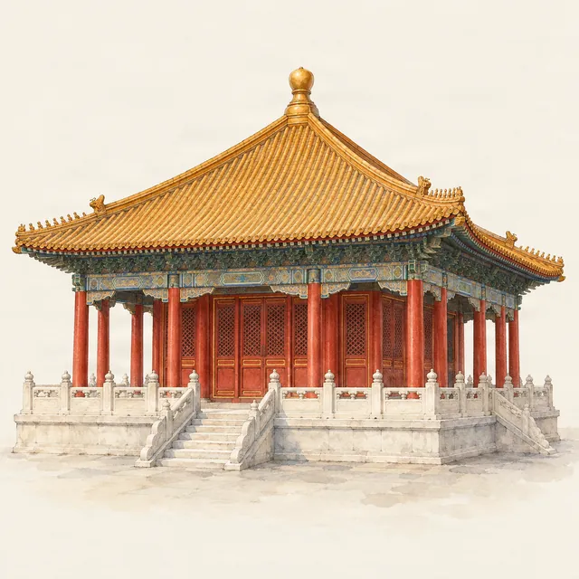

Forbidden City · timing
Forbidden City crowds and the best time to visit
Last checked:

When is the Forbidden City most crowded?
During China's national holidays: Golden Week (1–7 October), the May Day holiday (around 1–5 May) and Chinese New Year (late January or February), plus the summer school holidays in July and August. On those days tickets are gone within minutes of release, seven days ahead. The quietest times are weekday mornings from March to April and from late October to mid-December, outside the holidays.
Does the palace get overcrowded?
Not as badly as an unlimited site: every ticket is sold in advance, by name and for a morning or afternoon session, so the number of visitors is set by the booking system. That moves the problem to booking: on busy dates the challenge is getting a ticket, not the crowd inside. See how to book with a passport.
Which Chinese holidays should I avoid?
| Holiday | When | Crowds |
|---|---|---|
| Chinese New Year (Spring Festival) | Late January or February, about 8 days | Very busy |
| Qingming Festival | Early April, about 3 days | Busy |
| May Day | 1–5 May | Very busy |
| Dragon Boat Festival | June, about 3 days | Busy |
| Summer school holidays | July and August | Busy every day |
| Mid-Autumn Festival | September or early October | Busy |
| National Day Golden Week | 1–7 October | The busiest week of the year |
The exact dates move each year with the lunar calendar and are announced by the State Council near the end of the previous year. Check them before you book flights.
What is the best day of the week?
Tuesday to Thursday. The palace is closed on Mondays (except public holidays), so Tuesdays catch some people who could not come the day before, and weekends are busier everywhere in Beijing. Avoid the day before or after a holiday too.
What is the best time of day?
The first hour after the 08:30 opening. Tour groups usually arrive mid-morning, and the doorway of the Hall of Supreme Harmony gets crowded from then on. A late start can also work: by mid-afternoon groups have moved on, but remember the last entry at 16:00 (April–October) or 15:30 (November–March).
Which parts of the palace are quieter?
The central axis is always the busiest. The side courtyards are calmer at any time: the Six Western Palaces where consorts lived, the Clock Gallery and the Treasure Gallery in the east (¥10 each), which also keep many people away. Even on a busy day, ten minutes' walk off the axis can feel like a different place.
What if I can only go during a holiday?
- Be online at 20:00 Beijing time exactly seven days ahead.
- Check again the evening before your visit for cancellations.
- Take an afternoon session, which sells out later.
- Visit Jingshan Park instead or as well, for the best view of the palace roofs.
Does the season matter?
Spring and autumn have the best weather and the most visitors. Summer is hot and humid with afternoon storms; winter is cold, dry and quieter, with cheaper tickets. See the Forbidden City in winter. Whenever you go, Penyola's map shows the side courtyards and quieter routes, offline.
More planning guides
- The Forbidden City in winter and snow
- Forbidden City tickets for foreigners
- The Forbidden City in half a day
Sources
Checked on these official pages on 9 November 2026: